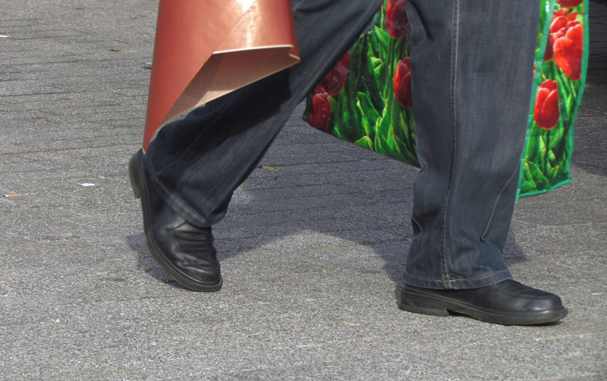
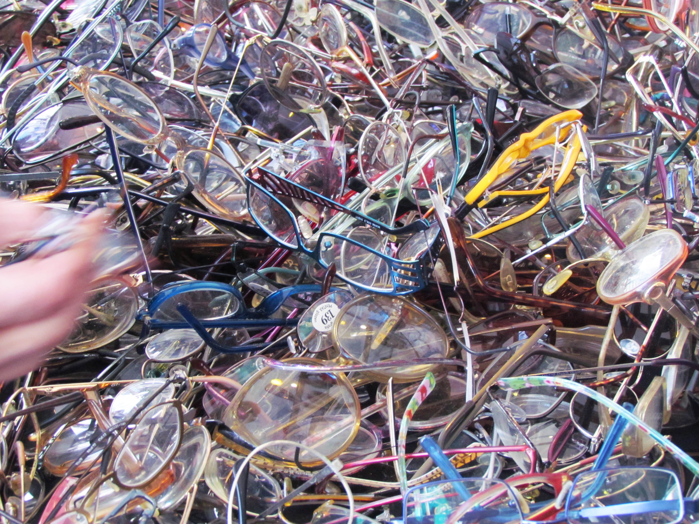
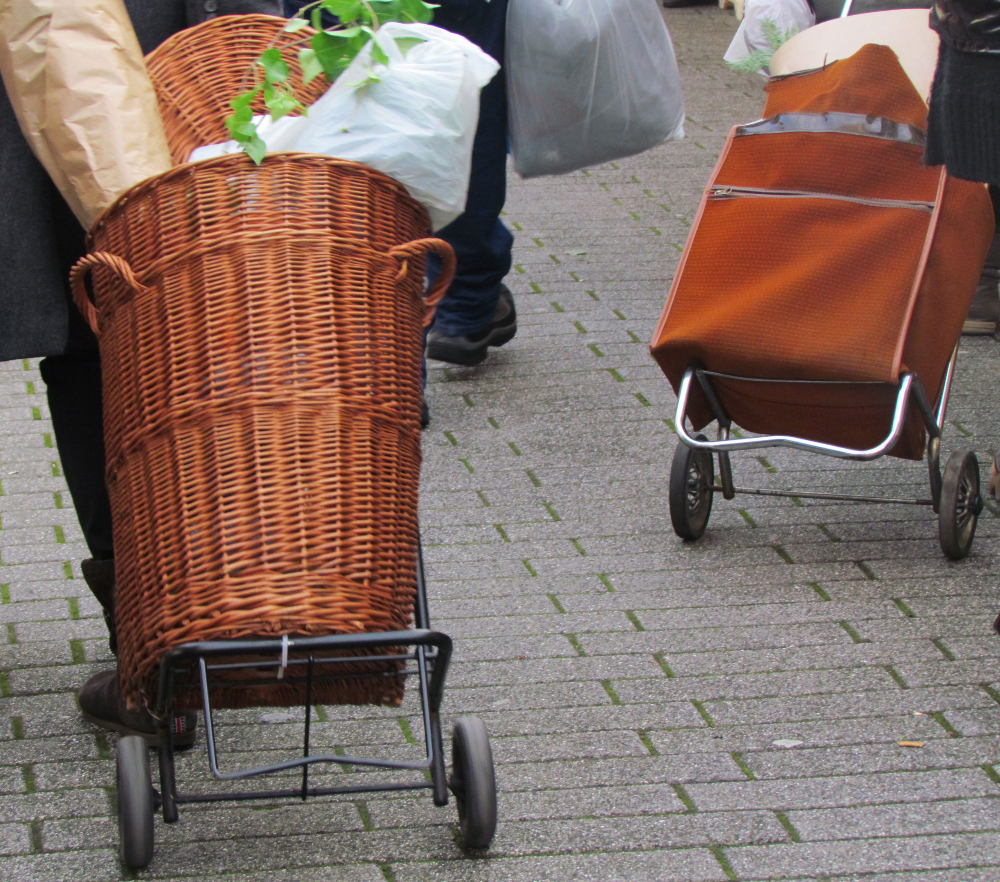
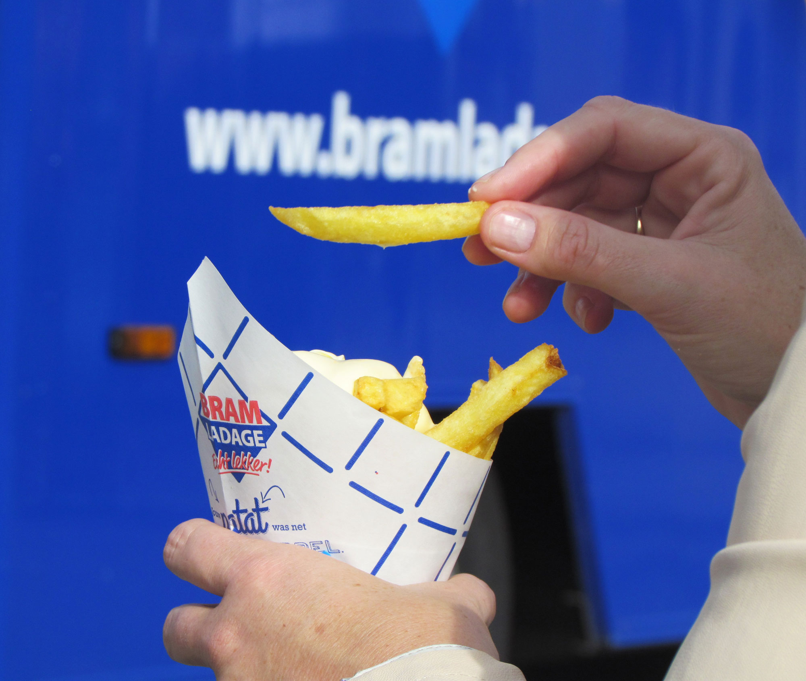
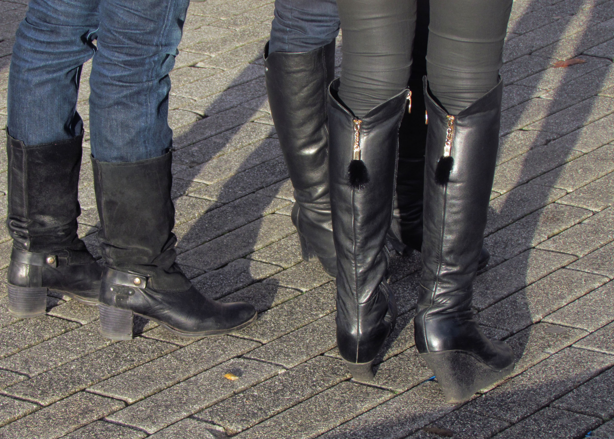

Taken in Blaak Market, Rotterdam, this series is an attempt at capturing the fleeting sights and sounds of market scenes. The bargain banter exists within a backdrop of a slower paced life, which is perhaps a subconscious attempt at matching the speed of the outdoor market. Juxtaposing the two motions of movement and stillness in the market environment, The Market Series throws light on guilty pleasures – both in the voyeurism of the photographer’s eye and in the unadulterated indulgence in consumer culture.
Exhibited as part of Erasmus Expo, Rotterdam in January 2015